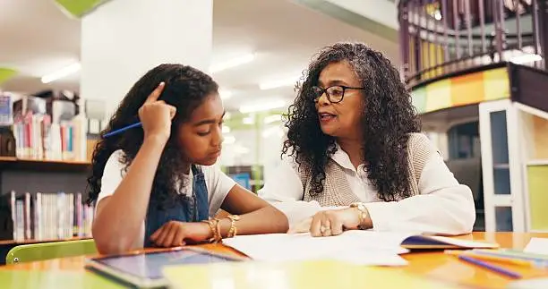
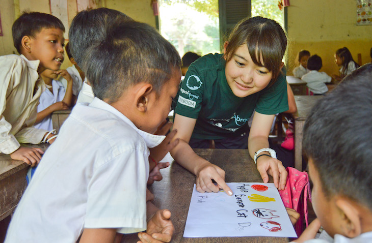

Volunteer
Join our student volunteer team
Students can use their skills in tutoring, STEM, engineering, technology, and other areas to support projects with Native communities.
Why volunteer
Use your skills to help communities
Indigenous Futures Initiative brings together students who want to support Native communities through education, STEM, and other community-led projects.
Volunteers can contribute through subjects they enjoy, skills they have developed, and projects that match community needs.
What volunteers can help with

Tutoring and academic support
- Math
- Science
- Physics
- Writing
- Homework help
- Test preparation

STEM and engineering
- Coding
- Engineering activities
- Technology projects
- Physics activities
- Hands-on STEM projects

Community projects
- Digital support
- Website help
- Research
- Events
- Other student-led projects
Who can volunteer
Students from different backgrounds
We welcome students interested in education, STEM, engineering, technology, and community service.
Volunteers can contribute their skills while working with other students and supporting projects with Native communities.
Get involved
Interested in volunteering?
Fill out our volunteer form and tell us about your interests, skills, and areas where you would like to help.